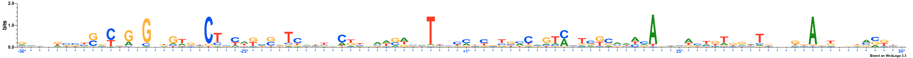
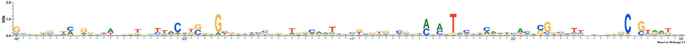
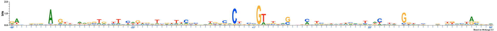
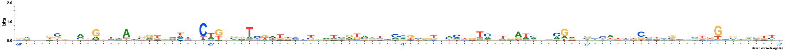
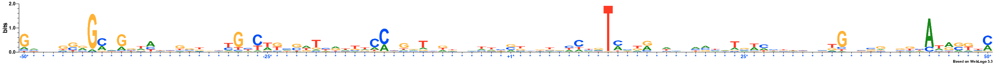
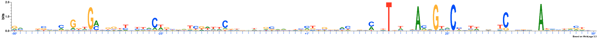
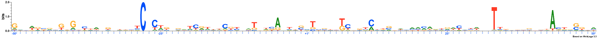
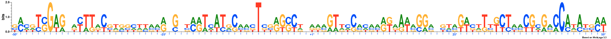
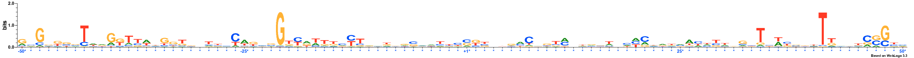

MODEL
Lambda: 0.0
Dataset structure: 800 sequences with 100 features
Number of architectures in the best model: 14
Likelihood of best model: -142270.576615
Architecture 1: 53 sequences with 100 important features
Sequence logo for the important positions in architecture 1

Architecture 2: 53 sequences with 100 important features
Sequence logo for the important positions in architecture 2

Architecture 3: 0 sequences with 100 important features
No Sequences
Architecture 4: 0 sequences with 100 important features
No Sequences
Architecture 5: 102 sequences with 100 important features
Sequence logo for the important positions in architecture 5

Architecture 6: 88 sequences with 100 important features
Sequence logo for the important positions in architecture 6

Architecture 7: 81 sequences with 100 important features
Sequence logo for the important positions in architecture 7

Architecture 8: 205 sequences with 100 important features
Sequence logo for the important positions in architecture 8

Architecture 9: 0 sequences with 100 important features
No Sequences
Architecture 10: 122 sequences with 100 important features
Sequence logo for the important positions in architecture 10

Architecture 11: 4 sequences with 100 important features
Sequence logo for the important positions in architecture 11

Architecture 12: 0 sequences with 100 important features
No Sequences
Architecture 13: 0 sequences with 100 important features
No Sequences
Architecture 14: 92 sequences with 100 important features
Sequence logo for the important positions in architecture 14

NOTE: All important positions in the logos are followed by an asterisk symbol and are coloured blue